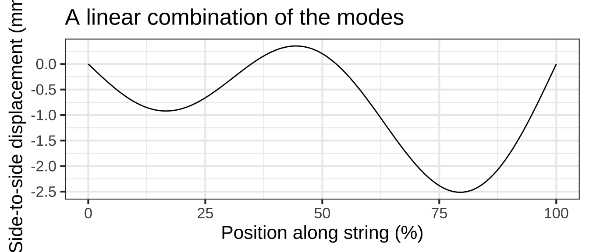
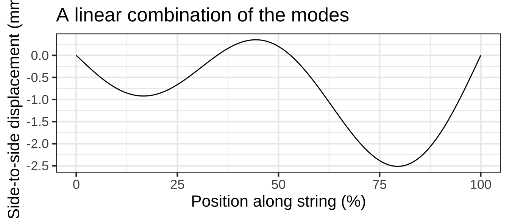

Chapter 12 Functions with multiple inputs
We can use linear combination and function multiplication to build up custom functions from the basic modeling functions. Similarly, linear combination and function multiplication provide ways to construct functions of multiple inputs.  1400
1400
12.1 f(x) times g(t)
For example, soon after a guitar string is plucked it conforms to a sinusoid pattern of displacement from the straight-line connecting the two fixed ends of the string: one set by finger pressure on the fret and the other at the bridge.
For a string of length \(L\), the string displacement is a function of position \(x\) along the string and is a linear combination of functions \[g_k(x) \equiv \sin(k \pi x /L)\] where \(k\) is an integer. A few of these functions are graphed in Figure 12.1.
 

Figure 12.1: Vibrational modes of a guitar string.
Shapes of the sort in Figure 12.1 are a stop-motion flash snapshot of the string. The string’s shape also changes in time, so the string’s displacement is a function of both \(x\) and \(t\). The displacement itself is a sinusoid whose time period depends on the length and tension of the string as well as the number of cycles of the spatial sine:
\[g_k(x, t) \equiv \sin(\frac{k \pi}{L} x) \ \sin(\frac{k \pi}{P}t)\] Figure 12.2 shows a few snapshots of the 1.5 cycle string at different moments in time, and the motion of the linear combination.1410


Figure 12.2: String position changes over time.
12.2 Two-variable modeling polynomial
In Section 11.3 we introduced the low-order polynomial, either \(g_1(x) \equiv a_0 + a_1 x\) or \(g_1(x) \equiv b_0 + b_1 x + b_2 x^2\) as a general-purpose way of generating a function with a smoothly curved shape. The same applies in constructing simple functions of two variables.
Almost always, you should use at least a first-order polynomial, which is: \[h_1(x, y) \equiv a_0 + a_x x + a_y y\] But there is an important extension of this, using what’s called a bilinear term or, more evocatively in statistics, an interaction term. This is \[h_2(x, y) \equiv \underbrace{b_0}_\mbox{intercept} + \underbrace{b_x\, x + b_y\, y}_\mbox{linear terms} + \underbrace{b_{xy}\,x\, y}_\mbox{bilinear term}\]
The bilinear term arises in models of phenemona such as the spread of epidemics, the population dynamics of predator and prey animals, and the rates of chemical reactions. In each of these situations one thing is interacting with another: a predator killing a prey animal, an infective individual meeting a person susceptible to the disease, one chemical compound reacting with another. 1420
Under certain circumstances, modelers include one or both quadratic terms, as in \[h_3(x, y) \equiv c_0 + c_x\, x + c_y\, y + c_{xy}\,x\, y + \underbrace{c_{yy}\, y^2}_\mbox{quadratic in y}\] The skilled modeler can often deduce which terms to include from basic facts about the system being modeled. We’ll need some additional calculus concepts before we can explain this in a straightforward way.
Explain why we are not using letter subscripts on the scalars in the linear combination.
12.3 Function composition (not!)
We left function composition out of the list of ways to build multivariable functions out of simpler functions with a single input.
For instance, consider the two functions \(f(x)\) and \(g(t)\). The composition \(f(g(t))\) has only one input: \(t\). Similarly, \(g(f(x))\) has only one input: \(x\).
EXERCISE:
In Section 11.2 you saw a function giving the declination of the sun as a function of day of year, and length-of-day as a function of latitude and sun’s declination. Putting these together let’s us assemble day-length as a function of latitude and day of year.
Give function. DRAW CONTOUR PLOT, take slices. Day length as seen by a migrating bird. [Plug in a simple sinusoid for latitude to reduce the function to day-length versus day-of-year.]
Exercise 12.3: NOAA
Many printed tables are meant to be used as functions; you plug in the input values and read off the output. Here’s a table published by the National Oceanic and Atmospheric Administration for the heat index, a way of summarizing the perceived comfort (or discomfort) of summer-like weather conditions.

Question A A) What are the inputs to the heat-index function
- temperature and relative humidity ✓
- temperature and wind speed ☹︎ Those are the inputs to the wind-chill function, not the heat index.
- temperature, latitude, and longitude ☹︎ The heat index doesn’t depend on location.
The table actually shows three different functions:
- The heat index in \(^\circ\) F.
- The heat index in \(^\circ\) C.
- A caution warning level.
Question B B) For inputs of 70% relative humidity and \(88^{\circ}\) F, what are the outputs of the three functions?
- \(100^{\circ}\) F, \(38^\circ\) C, and “extreme caution.” ✓
- \(100^\circ\) F, \(38^\circ\) C, and “danger.” ☹︎ Check again!
- \(100^\circ\) F, \(33^\circ\) C, and “extreme caution.” ☹︎ 33C does is not the same temperature as 100F.
Question C C) Holding the relative humidity at 70%, how much would the ambient temperature have to increase (from \(88^\circ\) F) to change the caution-level output to “dangerous?”
- Increase by \(2^\circ\) F ✓
- Increase by \(6^\circ\) F ☹︎ It looks like you’re increasing the humidity to the point where the heat index is \(106^circ\) F. But we asked you how much the temperature input has to change, not the heat-index output.
- Increase relative humidity to 80%. ☹︎ It’s true that at \(100^\circ\) F and 80% humidity, the caution-index is “dangerous.” But the problem specified holding humidity constant.
Question D D) From a starting point of \(88^\circ\) F and 70% humidity, what is the slope of the increase in heat index when moving to 80% humidity.
- \(6^\circ\) F per 10 percentage points humidity ✓
- \(6^\circ\) F ☹︎ A slope is always “rise over run.” You’ve got the rise right, but what about the run?
- \(6^\circ\) F per 80% humidity. ☹︎ The slope is the change in output divided by the change in input, i.e. “rise over run.” 80% is the humidity at the endpoint, but the run is the change in humidity from the starting point to the endpoint.
Question E E) What is the heat-index output when the inputs are 52% relative humidity and \(91^\circ\) F? Choose the best answer.
- \(98.4^\circ\) F ✓ Of course, the 4 in the last digit is sketchy, but it’s reasonable to calculate the interpolated output by averaging over neighboring outputs.
- \(101^\circ\) F ☹︎ That’s the output at 55% humidity and \(92^\circ\) F.
- The table doesn’t say. ☹︎ While it’s true that there is no table entry specifically for 52% and \(91^\circ\) F, you can make a very reasonable guess by interpolation, that is, reading between the rows and columns.
Question F True or false: The caution-level output could have been presented as a function of just one variable, rather than needing both temperature and humidity both.
TRUE ✓ The caution-level output is not a function of ambient temperature alone or of humidity alone. But if you know the heat-index, you know that caution level exactly. FALSE ☹︎ Notice that the caution-level output is the same for any given level of the heat index, regardless of the ambient temperature or humidity separately.
The US National Weather Service also publishes a heat index graphic, the one below.

{kind=link}
Exercise 12.7: EDKKW
Recall the Pythagorean theorem: \(C^2 = A^2 + B^2\). Let’s write this as a function that takes as inputs the lengths of the two legs and produces as output the length of the hypotenuse.
\[\mbox{hypotenuse}(a, b) \equiv \sqrt{\strut a^2 + b^2}\]
This can be seen as a composition of a function \(f()\) onto a linear combination of power-law functions \(g()\) of different inputs.
Question A What is the function \(f()\)?
- \(f(x) \equiv a^2\) ☹︎ This wouldn’t make sense. The output of \(f()\) doesn’t depend on its input.
- \(f(x) \equiv \sqrt{x}\) ✓
- \(f(x) \equiv x^2\) ☹︎ This is part of the interior function, not the outer function.
- \(f(x) \equiv +\) ☹︎ Sorry, but the output of the hypothenuse() function needs to be a quantity, and \(+\) is not a quantity.
Question B What is the function \(g()\)?
- \(g(x) \equiv a^2\) ☹︎ This wouldn’t make sense. The output of \(f()\) doesn’t depend on its input.
- \(g(a) \equiv x^2\) ☹︎ This wouldn’t make sense. The output of \(f()\) doesn’t depend on its input.
- \(g(x) \equiv x^2\) ✓ Right, a power-law function. It doesn’t matter what we call the input, so long as it’s used consistently in the definition.
- \(g(x) \equiv a^2 + b^2\) ☹︎ Sorry, but the input name is \(x\) and the formula on the right side of the tilde expression has \(a\) and \(b\) in it.
Question C There are two functions in the linear combination. What are they?
- \(g(a)\) and \(g(b)\) ✓
- \(f(x)\) and \(g(x)\) ☹︎
- \(f(b)\) and \(g(b)\) ☹︎
Question D What are the scalars in the linear combination?
- \(1\) and \(1\) ✓
- \(1\) and \(-1\) ☹︎
- There are no scalars. ☹︎ I think I know what you’re getting at. The tradition in mathematics is that when a scalar is \(1\), we don’t write it down. But still, the scalar is \(1\).
You used \(a\) and \(b\) as the names of the inputs to hypotenuse(). Aren’t \(a\) and \(b\) meant to be parameters, not input names?
You can use whatever you want as input names, so long as they are used consistently between the left and right sides of the \(\\equiv\). Names like \(x\), \(t\), and \(y\) scream out to be recognized as input names, so these are what we use most of the time. But the Pythagorean theorem is usually written using A, B, and C. I’m honoring that convention so that a human reader gets a cultural hint what the inputs stand for. I’m unapologetic about this, since you got fair warning by the left side of the \(\\equiv\) what the argument names are.
Exercise 12.11: EDKYV
The function bigger() is defined piecewise in terms of two extremely simple functions.
bigger <- makeFun(ifelse(y > x, y, x) ~ x + y)
contour_plot(bigger(x,y) ~ x+y, domain(x=c(-2,2), y=c(-2,2)))
{bg2-1, echo=FALSE, results="markup"} askMC( "Which of the following best describes the two pieces of the domain?", "+One is above and to the left of the line of identity (that is, $y=x$) and the other is below and to the right of that line.+", "One is $x > 0$ and the other $x \\leq 0$", "One is $x > 0$ and the other $y \\leq 0$" )